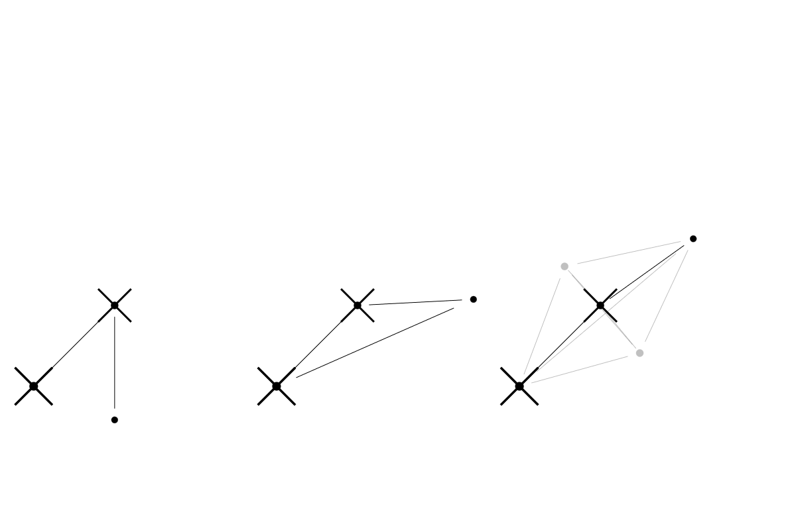

Physically Based Animation of Plants
Undergraduate Honors Thesis
Bruno Li
Advisor: Donald Fussell
Goals
A fully interactive tree simulation.
-
Rendering:
Trees that...look like trees
-
Geometry:
A wide variety of tree shapes
-
Dynamics:
Interactive motion (arbitrary physics, not pre-canned animation)
-
Effects:
Easy to add extra effects if needed
-
Real-time:
Fast simulation (doesn't have to be "accurate")
Prior Work: Tree Rendering
Boudon F., Prusinkewicz P., Federl P., Godin C., Karwowski R., "Interactive design of bonsai tree models". Comput. Graph. Forum 22, 3 (2003), 591--600. 2, 5
First-Class Trees
All sorts of interaction:
-
Collision:
Arbitrary collision against other objects (debris, ground)
-
Applied forces:
Arbitrary applied forces (tugging the tree)
-
Destructible:
Trees can be cut into pieces
-
Special effects:
Fire, rain, wind, etc.
Method Overview
-
Design (geometry)
Use L-systems to generate tree geometry
-
Physics (structure)
Develop physics to provide tree structure
-
Effects
Add effects with support from physics engine (collision)
L-System: Examples
P. Prusinkiewicz and A. Lindenmayer, "Graphical modeling using L-systems", in The Algorithmic Beauty of Plants, New York, NY: Springer-Verlag, 1996.
L-System: D-Tree
start : F 1.0 0.005 0 N zero
zero : F 0.9 0.33 0 [ T 30.0 N zero ] F 0.9 0.33 0 [ T -30.0 N zero ] T 30.0 N zero
L-System: Bamboo
start : F 1.0 0.005 0 N left
left : F 0.98 0.5 0 [ T 40 F 0.5 0.1 1 N one_a ] N right
right : F 0.98 0.5 0 [ T -40 F 0.5 0.1 1 N one_a ] N left
one_a : N one_b
one_b : F 0.95 0.5 1 N one_a
L-System: Willow
NOT YET IMPLEMENTED
Soft-Body Physics

T. Jakobsen, "Advanced Character Physics," in Game Developers Conf. Proc., San Jose, 2011.
Physics Structures: String
Physics Structures: Cloth
Physics Structures: Trees
Bamboo: initial attempt
Angular Constraint

Physics Structures: Rigid Bar
Physics Structures: Trees
Bamboo: initial attempt
Physics Structures: Trees
Bamboo: with angular constraints
Deletion 1
destroy-distance ( DC )
- remove DC from each edge list of its two endpoints
- delete DC from memory
destroy-particle ( VL )
- call destroy-distance on all distance constraints in the edge list of VL
- delete VL from memory
Deletion 2
destroy-angular ( AC )
- call destroy-distance on all eight "implementation" distance constraints
- call destroy-particle on all two "implementation" particles
- remove AC from each edge list of its two endpoints
- delete AC from memory
destroy-distance ( DC )
- call destroy-angular on all angular constraints in the edge list of DC
- remove DC from each edge list of its two endpoints
- delete DC from memory
destroy-particle ( VL )
- call destroy-distance on all distance constraints in the edge list of VL
- delete VL from memory
Tree Splitting
tree-split ( DC )
- A is the tail of the distance constraint arc DC
- B is the head of the distance constraint arc DC
- call destroy-distance on DC
- call bfs on B
- new_tree->particles := result of bfs
- old_tree->particles := old_tree->particles (set difference) new_tree->particles
Special Effects

Fire
Criteria for fire behavior:
-
Flammable:
Objects can catch on fire
-
Local Spreading:
Fire spreads across an entire tree
-
Global Spreading:
Fire spreads from tree to tree
-
Upward Spreading:
Fire tends to spread upward
-
Wind Spreading:
Fire can be affected by wind
Rain
Criteria for rain behavior:
-
Fire-fighting:
Flammable objects get wet and extinguish
-
Tree shaking:
Tree branches wiggle in response to raindrops
Conclusion: Future Work
Everything is harder in 3D:
-
Self-collision
-
Twisting
-
L-system turtle
←
→
/
#